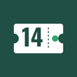
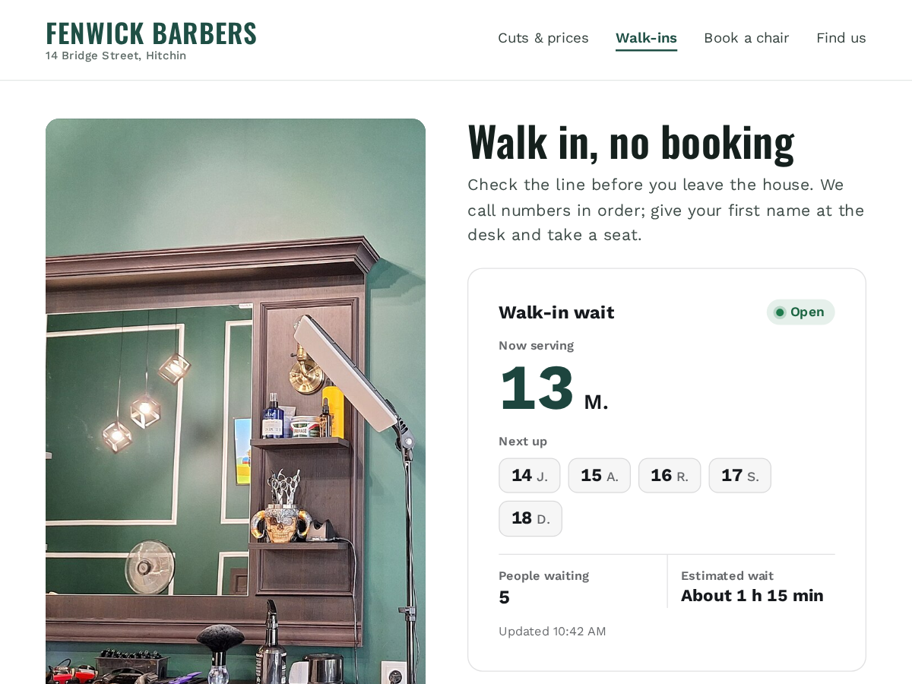

Walk-in Queue
Now serving board and live walk-in wait times
- Now serving, next numbers and estimated wait
- Staff console: add, call next, done, no-show
- Public board shows first initials only
- Estimate learns from your real service times

What it does
Walk-in Queue puts your live line on your site, so people can check the wait before they leave the house. The board shows the number being served, the next few numbers, how many people are waiting, an estimated wait, and whether you're open, paused or closed. It refreshes itself every 10 seconds.
Your staff run the line from the app's dashboard page, on a tablet or laptop at the counter. Add walk-in hands out the next number (a first name is optional). Call next brings up the next person when a chair or desk is free; Done and No-show close a turn. Numbers start again at 1 every day.
The estimate starts from your own minutes per person. Once three people have been served, it switches to the average of your last 20 real service times, divided by the number of people you serve at once.
The public board shows numbers and first initials only, like 15 J. Names and notes stay in your dashboard.
It suits barber shops, walk-in clinics, repair counters and tax offices.
The free plan takes 40 walk-ins a day. Premium removes the limit, adds a TV screen layout with big numbers for a screen in your shop, exports your walk-ins as CSV, and removes the small credit link.
Price
Free
- 40 walk-ins a day
- Live board on your site
- Staff console on any tablet
- Small credit link
Premium
$6/month, $5/month yearly (17% off). Hidden pre-made plan "Premium" (vendorId premium) stays hidden
- Unlimited walk-ins
- TV screen board with big numbers
- CSV export of your walk-ins
- Remove the credit link